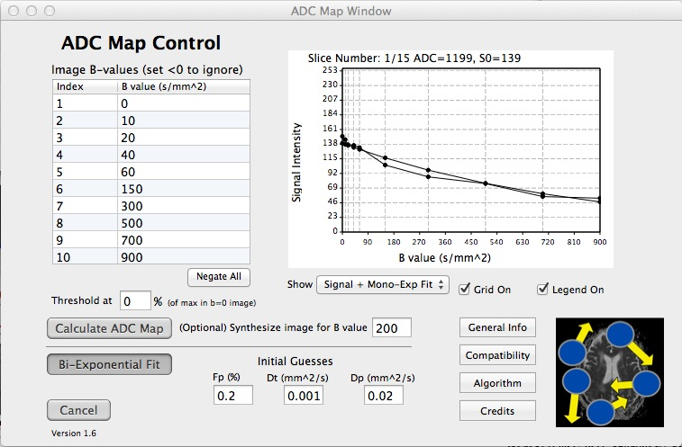

About this Plugin:
This is a simple plugin that allows you to calculate an ADC map (apparent diffusion coefficient) from images acquired with different diffusion weighting (b values). Simply open multiple images in the 4D viewer and run the plugin.
Notes:
- The plugin attempts to read b values from image headers. However, there is little consistency as to how this information is stored, so we will continue to work on this, and appreciate your feedback.
- You can instead just enter the b values for the acquired images in the plugin, which works fine.
- Maps are grayscale by default, but you can change the CLUT to make them color (etc).
Images:
Contact: Please send comments or questions to Brian Hargreaves bah@stanford.edu. Our group's OsiriX/Horos tools are located here.
Download: Expand the archive ADCmap.horosplugin.zip and double-click the plugin icon (or put the plugin into your Library/Application Support/Horos/Plugins folder.)
Source Code: This Horos version. / Former OsiriX version.
History before 2.0 (before Horos version): versions and changes
Acknowledgements: Kyung Sung, Geoff Charles-Edwards
Changelog (Version 2.0 on):
Version 2.0
- Horos 3.0 build.